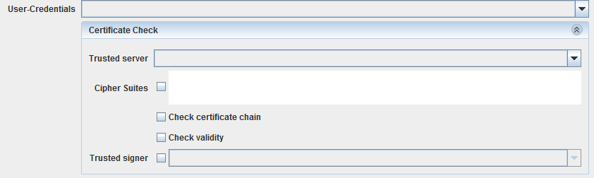

HTTP Post Sender

Topic content
Description
This channel provides the functionality to send a HTTP POST request to any given receiver with an enclosed message in the body content
Purpose of object
The HTTP Post Sender is used to transmit a POST HTTP request with content in the body of the request.
Configuration
The dialog to configure the HTTP POST Sender looks like
Configuration of the POST Sender channel
Step by Step
•Endpoint Here you may select Static endpoint or Dynamic endpoint. If Dynamic endpoint is selected, the channel has a parameter ctrl_endpoint. The caller has to provide the actual URL as value of this parameter. In this case the URL defined in the is not used; If a Proxy server is defined in the this proxy is used even if Dynamic endpoint is selected.
•Service-URL Here an Environment Entry of type Uniform resource locator is selected. It contains the URL to call if Static endpoint is selected. If in the Environment entry a Proxy server is defined it is used even if Dynamic endpoint is selected.
•Connect-Timeout Sets a specified timeout value, to be used when opening the HTTP connection. If the timeout expires before the connection can be established, an error is raised. A timeout of zero is interpreted as an infinite timeout.
•Read-Timeout Sets the read timeout. A non-zero value specifies the timeout when reading the HTTP response. If the timeout expires before there is data available for read, an error is raised. A timeout of zero is interpreted as an infinite timeout.
•Security
•Authentication here you may select an authentication type. You can select one of No authorization required or Username/Password or Use preemptive authorization (Username/Password) or Use certificate authorization. If you selected Use certificate authorization then the selected user credential must have PKCS#12 Key Pair. See Credentials for more information about user credentials, and key pairs. See also the best practice story Web Service Security in SOAP web service calls for more information about how to import a Key Pair.
•User-Credentials a user credential of type Technical login. If you work with No authorization required you need no selection here.

In the combo box you need to select a Therefore create a Credential of type technical login and add a public/private keypair in pkcs#12-format.
Optionally, if you want to check server credentials, you should select a Therefore create Credentials of type trusted server and add a public key certificate.
Enforcing specific to be used in TLS is possible simply by adding comma separated values in the text box(e.g. "TLS_ECDH_RSA_WITH_AES_256_CBC_SHA,TLS_ECDHE_RSA_WITH_AES_256_CBC_SHA,TLS_DHE_RSA_WITH_AES_256_CBC_SHA").

Also, you can enforce certificate chain and validity check by selecting chain and boxes.
•Request settings
•Request The message type of the request content
•Serializer Here the user can select a Serializer used from Orchestra to serialized the content of the POST call. Typically here the XML-Serializer or the binary serializer is used.
•HTTP-Header here you may set additional HTTP headers. The channel will then have additional parameters to transfer the values of these header parameters.
•Response settings
•Response The message type of the response or -if no response is sent- you may select No response message
•De-Serializer Here the user can select a Deserializer to parse the content of the response sent from the server.
•Error processing Here the user can select a deserializer to parse the content of the error response sent from the server in case of a HTTP 500 response code.
Caveat: Due to historical reasons the error content is read only in case of a HTTP 500. Other error codes send from the server cause an error which can be handled using an error intermediate event in the process model. So an Error code 500 must be handled a differently, meaning, that the caller must check if the result message contains success data or error data!
See also
For special cases of HTTP invocations use the channel HTTP Sender (Parameter), for general use HTTP Caller.
To accept HTTP invocations you can use the channels HTTP GET Receiver, HTTP POST Receiver (General) and HTTP POST Receiver (Parameter).